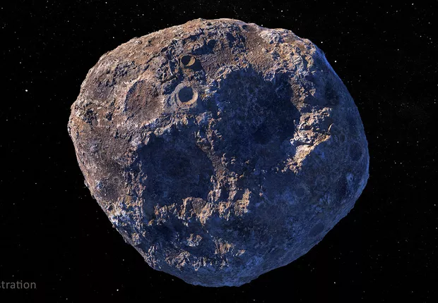

<!DOCTYPE html>
<html lang="pt-br" ;>

<head>
    <title> Sistema chinês é criado para monitorar asteróides que ameaçam a Terra </title>
    <meta charset="utf-8">

</html>

<body bgcolor="#F1DDF7" backgroundo="" text="" link="#E8FFBD" alink="#91AD5E" vlink="#974CAD">

    <font face="arial">

    <a name="topo"></a>

    <h1 align="center"> Sistema chinês é criado para monitorar asteróides que ameaçam a Terra </h1>

    <p align="center"> Mais de 20 antenas de radar trabalharão juntas para capturar imagens de
        ameaças rochosas no espaço, no que será o sistema de radar espacial de maior alcance do
        mundo.</p>

    <p align="center"> O radar terrestre pode ser uma das melhores ferramentas da humanidade
        para proteger a Terra contra a ameaça de asteroides.</p>

    </font>

    <hr color="#974CAD" size="4" width="" />

    <p align="center">

    <figure align="center">

        
        <figcaption> (Foto: NASA/JPL-Caltech/ASU) </figcaption>

    </figure>

    </p>

    <br />

    <figure align="center">

        <a href="https://epocanegocios.globo.com/Tecnologia/noticia/2022/07/china-cria-sistema-para-monitorar-possiveis-ameacas-de-asteroides.html"
            target="_blank" title="Imagem de asteróide em direção à Terra">

            
            <figcaption> (Foto: Родион Журавлёв/Pixabay ) </figcaption>

        </a>

    </figure>

    <hr color="#974CAD" size="4" width="" />

    </p>


    <p align="justify"><strong><u>Pesquisadores chineses vão investigar os danos materiais que os
                asteroides podem causar à Terra.</u></strong> O projeto <em>China Fuyan</em>, criado e
        liderado pelo <strong><u>Instituto de Tecnologia de Pequim</strong></u>, vai construir
        mais de 20 grandes antenas para rastrear corpos celestes a até 150 milhões de quilômetros
        da Terra (tão distante quanto o Sol) e o risco que eles representam ao planeta.</p>

    <p align="justify">Até agora, duas antenas já foram construídas em <em>Chongqing</em>, no sul
        da China. Elas serão testadas e devem começar a operar em setembro, de acordo com o jornal
        chinês <em>Science and Technology Daily</em>. Cada antena tem de <strong><u>
                25 a 30 metros de diâmetro</u></strong>. O conjunto completo será o sistema de radar
        espacial de maior alcance do mundo, mas a maioria da operação será sigilosa.</p>

    <details>

        <summary>
            <font color="#974CAD"> Leia mais...</font>
        </summary>

        <p align="justify">O presidente do <em>Instituto de Tecnologia de Pequim</em>,
            <em>Long Teng</em>, disse ao Global Times que o projeto atenderá aos requisitos
            do país em relação à detecção espacial e aos estudos sobre a formação de asteroides.
            O sistema também pode ter aplicabilidade para rastrear satélites e detritos na
            órbita do globo.
        </p>

        <p align="jusify">Em abril, a <em>Administração Espacial Nacional da China</em>
            anunciou que está trabalhando em um plano de defesa planetária que inclui rastrear
            objetos próximos da Terra e lançar uma missão de teste de deflexão de asteroides nos
            próximos anos.</p>

        <p align="justify">Segundo uma nova pesquisa da <em>Academia Nacional de Ciências,
                Engenharia e Medicina dos Estados Unidos</em>, o radar terrestre pode ser uma das melhores
            ferramentas da humanidade para proteger a Terra contra a ameaça de asteroides.</p>

    </details>

    <hr color="#974CAD" size="4" width="" />

    </br>

    <p align="center">

        <video controls width="500" height="400" autoplay loop muted>
            <source src="video/Pexels Videos 3867.mp4" type="video/mp4">
        </video>

    </p>

    <a href="#topo"> Retornar ao topo </a>

</body>

</html>